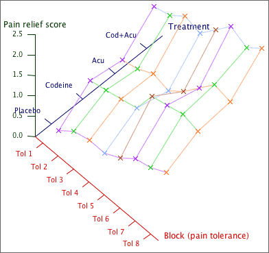

Three-dimensional scatterplot of data
Data from a randomised block experiment can be displayed in a three-dimensional scatterplot:

Model
Both blocks and treatments explain some variability in the response measurement, Y, but...
Blocks and treatments are modelled in the same way:
y = (overall
mean) + (effect depending on block)
+ (effect depending on treatment)
+ error
The error is again assumed to have a normal distribution with mean zero and constant standard deviation. Within any block, changing the treatment simply adds or subtracts a constant to the response.